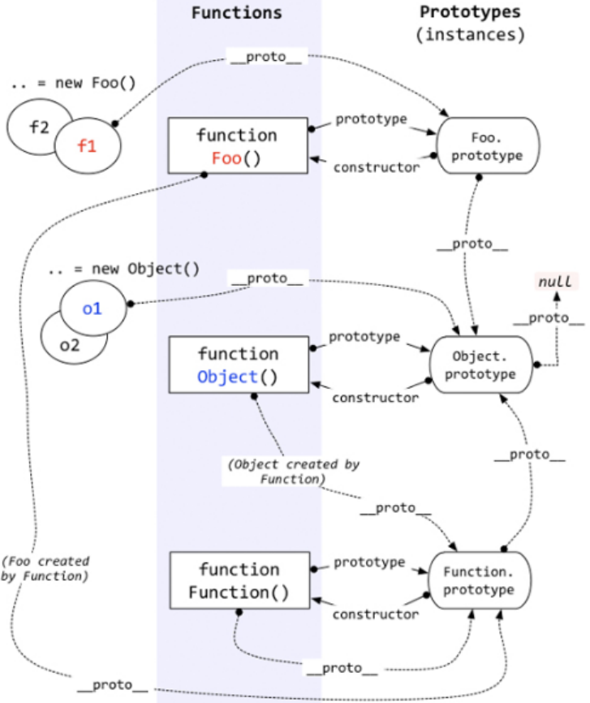

<body>
    <a href="https://developer.mozilla.org/zh-CN/docs/Web/JavaScript/Inheritance_and_the_prototype_chain">
        继承与原型链
    </a>
    <p>
        
    </p>
</body>
<script>
    function Person(name, age) {
        this.name = name
        this.age = age
    }
    // 为什么常常这样声明类方法？
    // Person.prototype.fn = () => {}
    // 之所以不把 fn 放在 Person 里定义，
    // 是为了避免每次调用构造器都重新赋值一遍 fn，节省开销

    function print(head) {
        let cursor = head
        while (cursor) {
            console.log(cursor)
            cursor = cursor.__proto__
        }
    }

    function run() {
        const p = new Person('leo', 18)
        print(p)
        // 原型链：由 __proto__ 路径构成的链
        // person instance -> Person.prototype -> Object.prototype -> null
        console.log(Person.prototype.constructor === Person) // true
        console.log(Object.prototype.constructor === Object) // true
        console.log('===================================================')

        print(Person)
        // Person -> Function.prototype -> Object.prototype -> null
    }
</script>
